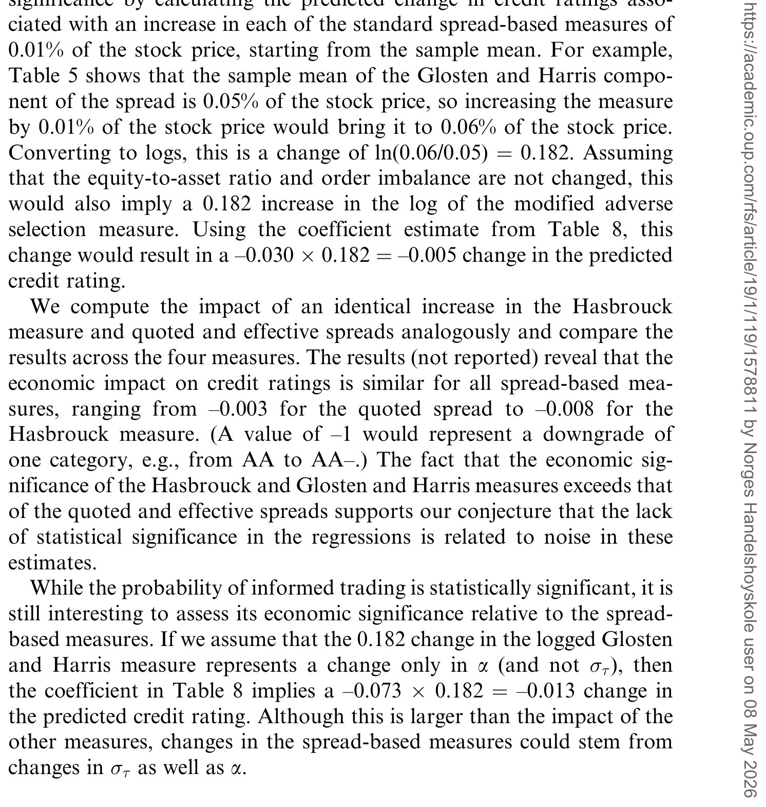
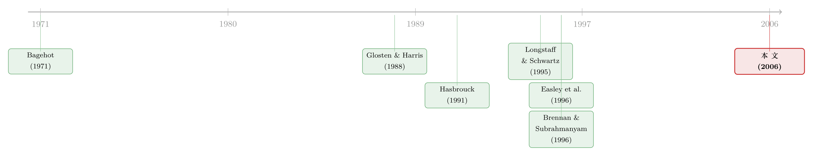

评级藏在买卖价差里：当股票的「逆向选择」预言了公司的信用
本文读的是 Odders-White & Ready (2006, Review of Financial Studies)：作者把两条「老死不相往来」的文献——信用评级与股票市场的逆向选择——焊在了一起。他们用一个简单的公司价值模型证明，私有信息越多的公司，评级应当越差；实证上，评级确实在买卖价差、Glosten-Harris 逆向选择成分、Hasbrouck 价格冲击、以及 PIN 这些微观结构度量更高时更差；更妙的是，这些度量的变化还能提前预测未来的评级调整。
1 一个被忽略的「同源」
先讲一个看上去八竿子打不着的事实。
评级机构（Moody's、S&P）在干的事，是评估一家公司债的风险——它会不会违约，违约了能收回多少。市场微观结构那帮人在干的事，是盯着交易所里一笔笔成交，估计做市商面对「比自己懂得多的对手」的风险有多大——也就是所谓的 逆向选择 (adverse selection)。一个在债券评级委员会的会议室里，一个在交易终端的报价跳动里，看起来风马牛不相及。
但 Odders-White 和 Ready 提醒我们：它们盯的其实是同一个东西的两半。
一家公司资产价值的不确定性越大，它的债越危险，股也越难定价。评级捕捉的是「债那一半」的不确定性，逆向选择度量捕捉的是「股那一半」、而且是通过交易暴露出来的那部分不确定性。既然总的资产不确定性是一个东西，那么这两条独立发展了几十年、互不引用的文献，理应在数据里碰头。
这正是本文最迷人的地方：它不是又造了一个新指标，而是拿一条文献去给另一条文献做独立验证。如果微观结构那套逆向选择度量真的在测量「信息不对称」，那它就该和评级负相关——这是一个可证伪的预言。
接着，一个自然的问题是：凭什么相信这两半真的同源？光靠「直觉上有关」是不够的，得有个模型把链条焊死。这就是本文先抛模型、再上数据的原因。
2 模型：把不确定性拆成「公开的」和「私有的」
本文的模型在精神上接近 Longstaff & Schwartz (1995) 的风险债估值框架：债务水平给定、资产价值过程不依赖资本结构、资产跌破债务面值即违约、违约时债主只拿回一部分。但 Odders-White & Ready 做了一个关键改动——他们把资产价值的冲击拆成了三种。
设 \(t\) 为以「天」计的时间，\(A_t\) 为第 \(t\) 天公司资产的总市值。假设资产价值的对数每天按如下方式演化：
三种冲击里，前两种 \(\delta_t\)（市场范围的系统性消息）和 \(Z_t\)（关于公司的公开公告）是所有人同时看到的；第三种 \(I_t\nu_t\) 才是要害——它在交易日开始时只被一小撮「知情者」看到，剩下的市场参与者要等到下一个交易日开始才知道。模型假设 \(\delta_t、Z_t、\nu_t\) 都服从均值为零、标准差分别为 \(\sigma_\delta、\sigma_Z、\sigma_\nu\) 的正态分布，且 \(\delta_t、Z_t、\nu_t、I_t\) 彼此独立、序列独立。私有事件发生的概率 \(\alpha\)，恰好对应 Easley et al. (1996) 用来刻画私有信息事件频率的那个 \(\alpha\)。
然后，把债务面值 \(D\) 吸收进一个新的状态变量：
$$ X_t = \ln(A_t) - \ln(D) $$
于是 \(-X_t\) 就是「债务/总价值」之比的对数，而 \(X_t\) 和 \(\ln(A_t)\) 遵循同一个转移方程。模型假设：当资产价值跌破债务面值，即 \(X_t < 0\) 时，公司违约；违约时债主只收回面值的一部分 \(\rho D\)（\(\rho\) 是回收率，因为破产有死荷损失）。
但真正关键的一步，是作者不去硬性指定评级和违约概率之间的函数形式，而只要求评级满足两条「随机占优」式的假设。对任意两家公司 A 和 B：
$$ \text{(i)} \quad P\!\left(X_t^A < 0\right) < P\!\left(X_t^B < 0\right) \ \ \forall t>0,\ \ \rho^A=\rho^B \ \Rightarrow\ \text{A 评级高于 B} $$
$$ \text{(ii)} \quad \rho^A > \rho^B,\ \ P\!\left(X_t^A < 0\right) = P\!\left(X_t^B < 0\right)\ \ \forall t>0 \ \Rightarrow\ \text{A 评级高于 B} $$
直白说就是：回收率相同时，违约概率处处更低的公司评级更高；违约概率相同时，回收率更高的公司评级更高。这是一组很温和、几乎不会有人反对的假设。
有了这套设定，两个核心命题就水到渠成了：
- 命题 1（更低的 \(\alpha\) ⟹ 更高的评级）：在其余参数都相等的前提下，私有信息事件发生得越频繁（\(\alpha\) 越大），评级越低。
- 命题 2（更低的 \(\sigma_\nu\) ⟹ 更高的评级）：在其余参数都相等的前提下，私有信息事件一旦发生其幅度越大（\(\sigma_\nu\) 越大），评级越低。
为什么？直觉其实朴素得很：任何一种不确定性的增加，都会推高违约概率、从而拉低评级。而逆向选择度量恰恰是冲着 \(\alpha\) 和 \(\sigma_\nu\) 去的——它们度量的就是「私有信息有多频繁、有多大」。于是私有信息越多 ⟹ 逆向选择越高 ⟹ 评级越低，链条闭合。
这里有一个有意思的量级感问题：私有信息事件真的大到能左右评级吗？作者搬出了 Hasbrouck (1988) 的一个经典结论——大约 34% 的股价变动可以由订单流解释。换句话说，通过交易过程被「打」进股价的私有信息，并不是边角料，它足够重要。
模型有两个值得警惕的假设。第一，私有信息冲击是对称（正态）的。作者自己用一个反例说明：构造两家公司 A、B，事件概率都是 0.5，债务面值都是 $100，事前公司价值都是 $155（A：0.9 概率到 $150、0.1 概率到 $200；B：0.1 概率到 $110、0.9 概率到 $160）。两者杠杆相同、股票信息不对称的「方差」也相同，但 B 有 0.1 的概率逼近违约，评级几乎不可能和 A 一样。当私有信息分布不对称时，「方差」和评级之间就不再是简单对应。第二，模型假设资产价值独立于资本结构演化——若评级反过来直接影响公司的经营（如触发契约、限制投资），这条因果链可能被污染。
3 四把尺子：逆向选择到底怎么量
模型说的是 \(\alpha\) 和 \(\sigma_\nu\)，但数据里看不到它们。作者于是请出微观结构文献里四把最常用的「尺子」，并逐一论证它们和模型参数的对应关系。
第一把：报价价差与有效价差 (quoted & effective spreads)。 自 Bagehot (1971) 起，人们就意识到买卖价差不只是交易的固定成本，更是信息不对称的直接产物——做市商知道有人比自己懂，就把价差拉宽，用赚没信息者的钱去填亏给知情者的窟窿。报价价差是 (卖价−买价)/中点；有效价差则用真实成交价算，考虑了价格改善。
第二把：价差的逆向选择成分。 价差里混着订单处理成本、存货风险，得把「逆向选择」那块拆出来。作者用 Huang & Stoll (1997) 版本的 Glosten & Harris (1988) 两成分模型：
$$ \Delta P_t = (1-\lambda)\,\frac{S}{2}\,\Delta Q_t + \lambda\,\frac{S}{2}\,Q_t + e_t $$
其中 \(P\) 是成交价，\(Q\) 是买卖方向指示变量（买为 $+1$、卖为 $-1$），\(S\) 是「成交价差」（因价格改善/恶化可能不同于报价价差），\(\lambda\) 是价差中归于逆向选择的比例。真正关心的量是 \(\lambda S/2\)——逆向选择成分。注意第一项乘的是 \(\Delta Q_t\)（方向变化，捕捉暂时性的订单处理成本），第二项乘的是 \(Q_t\)（方向本身，捕捉永久性的信息冲击）。
第三把：基于信息的价格冲击 (information-based price impact)。 Hasbrouck (1991) 的思路在概念上和上面相近，但用一个 向量自回归 (vector autoregressive, VAR) 模型把一笔交易的价格冲击拆成「永久」（信息）和「暂时」（订单处理+存货）两部分。其妙处在于：信息不是由总成交量传递的，而是由交易的「意外部分」——订单流里没被预期到的那块——传递的。作者采用 Brennan & Subrahmanyam (1996) 的实现：
$$ Z_t = a_Z + \sum_{i=1}^{5} b_i\,\Delta P_{t-i} + \sum_{i=1}^{5} c_i\,Z_{t-i} + \omega_t $$
$$ \Delta P_t = a_P + d\,\Delta Q_t + \lambda\,\omega_t + e_t $$
\(Z\) 是带符号的成交规模（\(Q\) 乘成交量）。第一个方程的残差 \(\omega_t\) 就是每笔交易里「意外」的部分，于是第二个方程里的 \(\lambda\) 就捕捉了基于信息的价格冲击。
第四把：知情交易概率 (probability of informed trading, PIN)。 Easley et al. (1996) 给出的度量，利用了「信息事件会造成持续的订单失衡」这一事实。在他们的模型里：
$$ \text{PIN} = \frac{\alpha\mu}{\alpha\mu + 2\varepsilon} $$
\(\alpha\) 是信息事件发生的概率，\(\mu\) 是知情交易者的到达率，\(\varepsilon\) 是每一侧噪声交易者的到达率。分子是知情订单流，分母是全部订单流。作者在后续检验里把 PIN 拆开：分出真正关心的 \(\alpha\)，和余项 \(\mu/(\alpha\mu+2\varepsilon)\)——后者更多反映流动性而非信息。这一步「拆解」是本文方法论上的点睛之笔：标准度量并不是为分离 \(\alpha\) 和 \(\sigma_\nu\) 而设计的，它们还混进了交易强度、资本结构等模型之外的因素，所以作者提出对标准度量做修正，好让它们更干净地对准模型里的两个不确定性参数。
4 结果：评级确实「听得见」交易里的信息
把四把尺子量出来的逆向选择，和评级放进面板回归，结论清晰：
第一，同期关系上，当逆向选择更高时——无论用报价/有效价差、Glosten-Harris 逆向选择成分、Hasbrouck 价格冲击，还是 PIN——信用评级都更差。这正是命题 1、2 的预言。
第二，当作者按模型把标准度量修正、只留下「反映私有信息多少」的那部分，这部分与评级显著负相关，和模型完全一致。
第三，也是最关键的稳健性：对于用价差或 Easley et al. 程序构造的修正度量，即便控制了总资产波动率、以及其他与评级和流动性相关的因素之后，逆向选择与评级的关系仍然显著。这一点呼应了评级机构反复强调的——量化财务分析只是评级这个「复杂过程」的一个组成部分。

Table 5: shows that the sample mean of the Glosten and Harris compo-
第四，预测性。这是全文叙事的「反转」所在。坊间和实证证据都说评级机构有时反应迟钝。作者顺势追问：逆向选择度量的变化，能不能提前预测未来的评级调整？他们估计了一个 有序 probit (ordered probit) 模型，发现——能。用近期逆向选择水平的变化、加上股权/资产比率的变化，可以预测未来的评级升降。
这层含义值得停一下：它既是「评级机构有时慢半拍」的又一证据，也提示逆向选择度量本身可能是一个更及时的信用风险监测工具。换句话说，市场里的交易者用脚投票暴露出来的私有信息，跑在了评级委员会的前面。
5 文献脉络
把这篇文章放回它生长的土壤，会看到两条几乎平行的河流，最后在这里汇成一股。
一条是 微观结构里的逆向选择：Bagehot (1971) 第一个把买卖价差解读为信息不对称的产物；Glosten & Harris (1988) 给出了把价差拆成逆向选择成分的可操作方法；Hasbrouck (1991) 用 VAR 把交易的价格冲击拆成永久与暂时两部分；Easley et al. (1996) 则发明了 PIN，直接去估「知情交易的概率」。Brennan & Subrahmanyam (1996) 把这些度量接进了资产定价。
另一条是 信用与债务价值的结构模型：Longstaff & Schwartz (1995) 在 Merton 框架上给出了风险债的简洁估值方法——本文模型的直接祖先。

而 Odders-White & Ready (2006) 站的位置很特别：它不在任何一条河里再往前推一步，而是横跨两岸架了一座桥，证明两套独立发展的度量量的是同一种「资产价值不确定性」。这种「拿 A 验证 B」的工作，和评级与价格信息含量的争论是一脉相承的（关于评级机构能否「看穿」市场噪声，可参见《当价格在说谎：评级机构凭什么「看穿」市场的噪声》）；而股与债是否真的「同船」，也是一个长盛不衰的问题（可参见《同一家公司，股票和它的「违约保单」，真的在同一条船上吗？》）。
6 评论与延伸（Q&A + 研究方向）
(a) 几个可能的疑问
Q：这只是「相关」，还是「因果」？评级和逆向选择会不会只是同被第三个东西驱动？
本文老老实实地走的是「相关 + 模型机制」的路线，并不主张评级导致逆向选择，或反之。模型给的因果叙事是：两者都被同一个底层变量——资产价值的私有不确定性 \(\alpha、\sigma_\nu\)——驱动。真正能让人信服的，不是同期相关本身，而是「控制总资产波动率后仍显著」以及「逆向选择变化能预测未来评级」这两点；后者尤其难用反向因果解释，因为时间顺序摆在那里。
Q：和 Easley et al. (1996) 的 PIN 到底有什么不一样？这篇是不是只是「PIN 的一个应用」？
不是。PIN 是本文用到的四把尺子之一，但本文的模型比 Easley et al. 更一般：他们假设信息事件只有「高/低」两个离散结果，本文则假设私有冲击服从正态分布，这样才能把不确定性参数和评级严格地联系起来。代价是交易博弈更复杂（信号为正但很小时，做市商的反应可能让价格越过真值、反而诱使知情者卖出）。作者承认这点，但论证：事件越频繁的公司，仍然该有更多「显著订单失衡」的日子，所以把估出的 \(\alpha\) 当作模型里 \(\alpha\) 的代理是合理的。
Q：模型假设资产价值独立于资本结构，这靠谱吗？
这是最该担心的地方，作者自己也点了出来。如果评级直接影响经营——比如评级跌破某档会触发契约、限制新投资 [Pulvino (1998)]——而这又恰好制造出更多私有信息事件，那么低评级会直接导致高逆向选择，机制就不再是「同源」而是「评级→交易」。反过来，高评级、约束更松的公司可能在酝酿大项目，其价值变化也可能是私有的，从而产生正向关系。这些都会削弱、甚至扭转模型预言的符号。
Q：为什么要费劲去「修正」标准度量？直接用原始的不行吗？
因为标准度量不是为分离 \(\alpha\) 和 \(\sigma_\nu\) 设计的，它们还吸收了交易强度、资本结构、流动性等模型外的东西。举例说，如果股票流动性高，公司更容易增发股权来避开财务困境，从而让在外的债更安全——这会在评级和价差之间制造一种模型之外的相关。修正的目的，就是尽量把「私有信息」那块从这些噪声里捞干净；修正后关系依旧显著，才更能说明是机制而非混杂。
Q：不同的尺子结论会不会打架？
会有差异。Dennis & Weston (2001) 就发现各种逆向选择度量行为大体一致、但并非高度（甚至并非正向）相关。它们的底层假设也不同：价差类度量隐含「信息不对称程度恒定」，而 Easley et al. 模型里信息不对称在一天内递减；Hasbrouck 允许多种成交规模和可预测的噪声交易时变，另外两把则基于单位成交规模与平稳噪声。正因如此，本文才同时用四把尺子——稳健性来自度量的多样，而非押注某一把。
(b) 几个可能的研究问题与提案
1）把这套逻辑搬到公司债市场本身。 【经济故事】本文量的是股票的逆向选择，再去对应债的评级。但公司债自己也有交易、也有买卖价差和价格冲击。债券市场的逆向选择度量，是不是比股票的更直接地预测评级调整？毕竟债主关心的就是债。 【可行性】中。需要 TRACE 的逐笔成交估算债券层面的价格冲击/有效价差，配上评级历史。难点是公司债交易稀疏、估计噪声大——但这恰好和《把「成交价」从「成交量」里解放出来——重新丈量公司债的流动性》里讨论的「稀疏交易下如何量流动性」直接相关，可借其方法。
2）外资持有人与逆向选择的「方向」。 【经济故事】如果一家公司被大量外资持有，知情交易的结构是否改变？外资可能信息劣势（本地私有信息更难获取），也可能信息优势（全球视角）。这会如何映射到该公司债的评级与逆向选择关系？ 【可行性】中。需要 13F/各国持股数据 + 评级 + 微观结构度量，识别可借助指数纳入或可投资度变化这类外生冲击。挑战在于把「外资份额」与「私有信息频率」干净地分开。
3）评级机构的「迟钝」能否被交易数据系统性地套利？ 【经济故事】本文说逆向选择变化能预测未来评级调整。那么一个只用微观结构信号、抢在评级机构之前调仓的策略，在债券或 CDS 上能否赚到超额收益？这是把「预测性」变成「可交易性」的检验。 【可行性】高。数据齐备（TRACE/CDS + 评级公告日），事件研究框架成熟。需诚实对待交易成本与流动性——预测的边际收益很可能被公司债的高交易成本吃掉。
4）私有信息「不对称性」的直接检验。 【经济故事】模型最脆弱的假设是私有冲击对称。作者用反例说明不对称会破坏「方差↔评级」的对应。能否用期权隐含偏度 (implied skewness) 作为私有信息不对称的代理，检验「在偏度大的公司里，逆向选择与评级的关系是否更弱」？ 【可行性】中。需要个股期权数据 + 评级 + 逆向选择度量。识别上要论证隐含偏度确实捕捉了「私有」而非公开的不对称信息，这一步并不轻松。
7 我的判断与参考文献
贡献。本文最漂亮的地方不在某个新指标，而在一个「桥梁式」的洞见：评级文献和逆向选择文献量的是同一种不确定性的两半。它给微观结构那套被用得到处都是的逆向选择度量，提供了一次来自完全独立领域的外部验证——这些度量「表现得像微观结构理论预测的那样」，这本身就是对一整类实证工具的背书。而「逆向选择变化能预测评级调整」这一发现，则把抽象的度量落到了实用的信用风险监测上。
对识别的担忧。我最不放心的是资本结构外生性这条假设。评级触发契约、约束投资，进而改变交易中的信息环境，是一条非常现实的反向/混杂通道；本文用「控制总资产波动率后仍显著」来缓解，但波动率并不能完全吸收这条机制。此外，同期回归的因果解释终究偏弱，全文真正立得住的是预测性那一块。
后续想看到什么。我想看一个把这套逻辑搬进公司债市场内部的版本——用债券自身的价格冲击去预测评级，而不是绕道股票；也想看在一个能提供外生冲击（如评级方法变更、监管门槛）的设定里，把「评级→交易」与「交易→评级」两条通道彻底分开。在外资持有、信用市场流动性这些方向上，本文留下的接口都还很宽。
参考文献
- Bagehot, W. (1971). The Only Game in Town. Financial Analysts Journal 27, 12–14, 22.
- Brennan, M., and A. Subrahmanyam (1996). Market Microstructure and Asset Pricing: On the Compensation for Illiquidity in Stock Returns. Journal of Financial Economics 41, 441–464.
- Dennis, P., and J. Weston (2001). Who's Informed? An Analysis of Stock Ownership and Informed Trading. Working Paper, University of Virginia.
- Easley, D., N. Kiefer, M. O'Hara, and J. Paperman (1996). Liquidity, Information, and Infrequently Traded Stocks. Journal of Finance 51, 1405–1436.
- George, T., G. Kaul, and M. Nimalendran (1991). Estimation of the Bid-Ask Spread and Its Components: A New Approach. Review of Financial Studies 4, 623–656.
- Glosten, L., and L. Harris (1988). Estimating the Components of the Bid-Ask Spread. Journal of Financial Economics 21, 123–142.
- Hasbrouck, J. (1988). The Summary Informativeness of Stock Trades: An Econometric Analysis. Review of Financial Studies 4, 571–595.
- Hasbrouck, J. (1991). Measuring the Information Content of Stock Trades. Journal of Finance 46, 179–207.
- Huang, R., and H. Stoll (1997). The Components of the Bid-Ask Spread: A General Approach. Review of Financial Studies 10, 995–1034.
- Longstaff, F., and E. Schwartz (1995). A Simple Approach to Valuing Risky Fixed and Floating Rate Debt. Journal of Finance 50, 789–819.
- Merton, R. (1974). On the Pricing of Corporate Debt: The Risk Structure of Interest Rates. Journal of Finance 29, 449–470.
- Pulvino, T. (1998). Do Asset Fire-Sales Exist? An Empirical Investigation of Commercial Aircraft Transactions. Journal of Finance 53, 939–978.